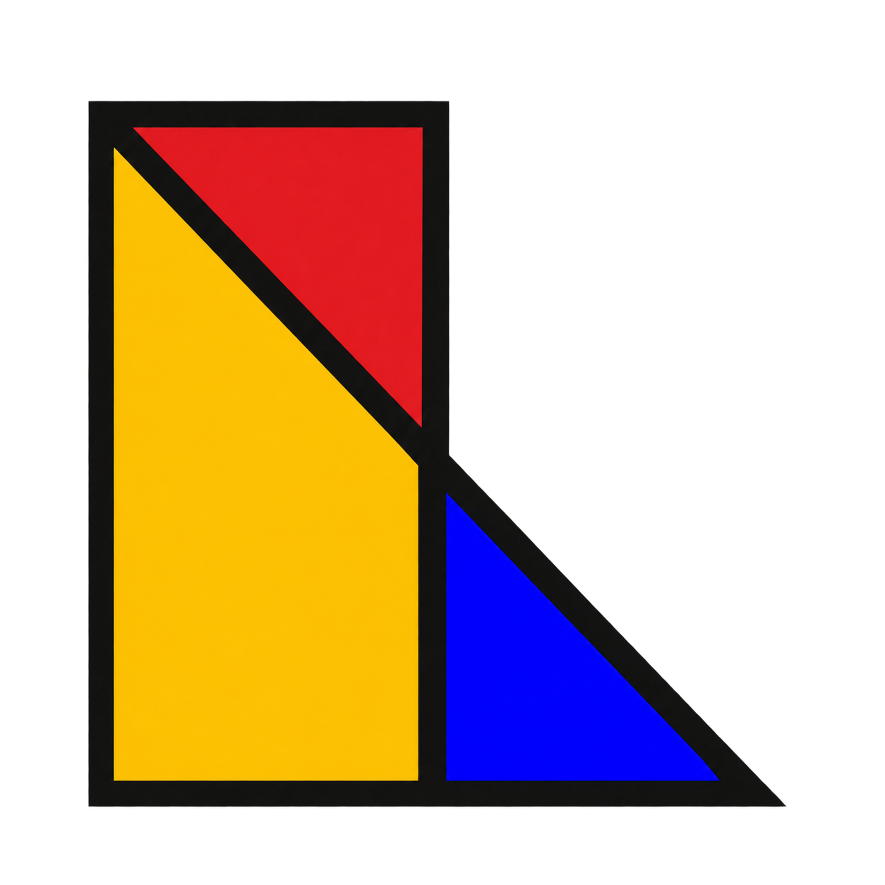
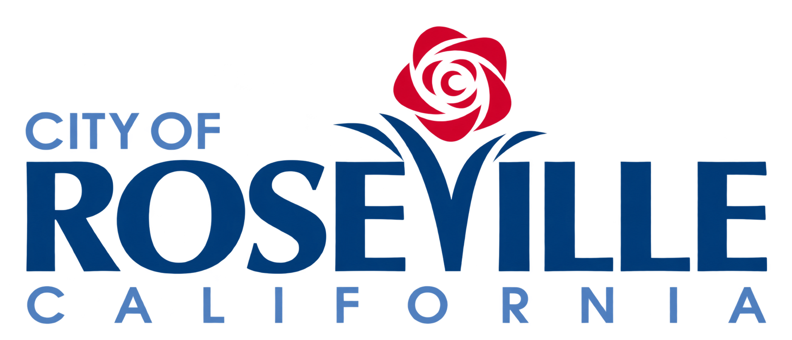

Experience
Full Stack Software Engineer
California State University, Monterey Bay
- Removed redeploys for feature changes by building a singleton toggle service read live by 2 REST endpoints
- Enabled storage of reaction-time data across 3 cognitive tests by building 5 REST endpoints and their SQL queries
- Replaced manual test runs with automated backend unit testing by implementing a GitHub Actions CI workflow
- Surfaced per-trial reaction times to researchers in real time via a React/TypeScript result listener and dashboard

Software Engineer Intern
LearnHaus | Sacramento, CA
- Generated personalized 5 year upskilling plans from survey answers by prompt-engineering an LLM in Google AI Studio
- Built the web app delivering those plans in HTML, CSS, and JavaScript for the Presidential AI Challenge
- Compared 6 LLMs on cost, accuracy, and published coding benchmarks, presenting a side-by-side breakdown to the team

Information Technology Intern - Client Services
City of Roseville | Sacramento, CA
- Provided IT support for enterprise systems used by 1,000+ employees, troubleshooting issues and assisting users
- Handled 5-10+ daily support requests, diagnosing and resolving technical issues
- Deployed and configured hardware (computers, monitors, peripherals) across multiple sites